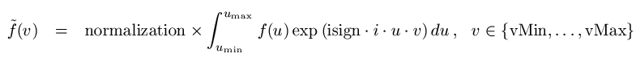
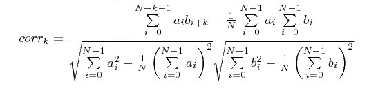
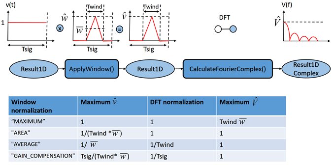

|
|
|
The Project Object offers miscellaneous functions concerning the program in general.
SelectTreeItem ( string itemname ) bool
Selects the tree Item, specified by name. The view will be updated according to the selection or a different view will be activated. A tree Item is specified by the full path, e.g. SelectTreeItem ("Tasks\SPara1"). The return value is True if the selection was successful.
GetSelectedTreeItem string
Returns the path name of the currently selected tree item or folder with regard to the root of the tree. E.g. if the task "SPara1" is selected, the returned path name will be "Tasks\SPara1".
SetAssemblyProject ( bool assembly )
Sets the project type. If assembly is true, the project is opened with assembly view activated. Otherwise only the schematic view is shown when the project is opened.
ActivateSchematicView
Activate the schematic view of the project.
ActivateAssemblyView
Activate the assembly view of the project.
ZoomToFit
Resets the schematic view to drawing.
TouchstoneExport ( string itemname, filename filename, string impedance) bool
Performs a Touchstone export of S-, Y-, or Z-Parameter results. 'itemname' is a tree item specified by name. It must contain S-, Y-, or Z-Parameters for the Touchstone export to be successfull. 'filename' is the name of the Touchstone file to be generated without extension. An appropriate extension, .s*p, .y*p, or .z*p, will be automatically appended. 'impedance' is the reference impedance, to which the N-Port parameters will be normalised. It is applied to all ports. The return type indicates whether the Touchstone export was successful.
ImportSPICEFromFile ( filename netlistFile, string subcircuitName, string dialect)
Imports a SPICE netlist from a SPICE file to the schematic and represents it as a single new block on the schematic. Subcircuit hierarchies are maintained on the schematic by representing subcircuit instances by CST DESIGN STUDIO project blocks or, alternatively if not parameterized, as clone blocks. Unsupported circuit elements are represented as SPICE blocks on the schematic. Supported circuit elements are represented as the corresponding block type in CST Design Studio.
netlistFile: Is the name of a valid SPICE file. Its path is either absolute or relative to the project path.
subcircuitName: Is the name of a toplevel subcircuit of that SPICE file that is to be represented on the schematic as a CST DESIGN STUDIO project block. If this string argument is empty, the first toplevel subcircuit of the SPICE netlist is represented. If "subcircuitName" does already exist on the schematic as block name, the name of the generated block is made unique by appending an integer counter.
dialect: Specifies the SPICE format of the SPICE netlist file, offering those formats that are supported by SPICE block in CST Design Studio. It may assume one of the values "SPICE3f5", "PSPICE", "HSPICE", or "Combined". :
ImportSPICEFromString ( string netlist, string subcircuitName, string dialect)
Imports a SPICE netlist to the schematic and represents it as a single new block on the schematic. Subcircuit hierarchies are maintained on the schematic by representing subcircuit instances by CST DESIGN STUDIO project blocks or, alternatively if not parameterized, as clone blocks. Unsupported circuit elements are represented as SPICE blocks on the schematic. Supported circuit elements are represented as the corresponding block type in CST Design Studio.
netlist: Is a VBA string containing the SPICE netlist. The netlist needs to be selfcontained, i.e., it must not feature any include or library statements.
subcircuitName: Is the name of a toplevel subcircuit of that SPICE file that is to be represented on the schematic as a CST DESIGN STUDIO project block. If this string argument is empty, the first toplevel subcircuit of the SPICE netlist is represented. If "subcircuitName" does already exist on the schematic as block name, the name of the generated block is made unique by appending an integer counter.
dialect: Specifies the SPICE format of the SPICE netlist file, offering those formats that are supported by SPICE block in CST Design Studio. It may assume one of the values "SPICE3f5", "PSPICE", "HSPICE", or "Combined". :
Example:
ImportSPICEFromString("Title" & vbCrLf & ".subckt one 1 2" & vbCrLf & "R1 1 2 1." & vbCrLf & ".ends one" & vbCrLf & ".end" & vbCrLf", "", "Combined")
GetBlockModeler(string blockName) object
Opens the CST Microwave Studio project, referenced by the MWS block blockName and returns the 3D modeler COM handle to it. This handle can be used for sending commands to the corresponding VBA engine.
If blockName is of any other block type than CSTMWS or CSTMWSFile, this function does nothing and returns an empty handle.
CopySelectionToClipboard
Copies the currently selected items to the clipboard.
CutSelectionToClipboard ( bool keepconnectors )
Cuts all selected components to the clipboard. If keepconnectors is false, all connectors which are connected to one of the cut components are cut as well. Otherwise they are kept.
PasteComponents
Paste components from clipboard.
SelectComponent ( string type, string name )
Selects the component with the specified type and name on the schematic.
|
Component |
type |
|---|---|
|
Block |
"B" |
|
External Port |
"P" |
|
Probe |
"O" |
DeselectComponent ( string type, string name)
Deselects the component with the specified type and name on the schematic.
SelectAllComponents
Selects all components on the schematic.
ClearComponentSelection
Deselects all components on the schematic.
DeleteSelectedComponents ( bool keepconnectors )
Deletes all selected components. If keepconnectors is false, all connectors which are connected to one of the deleted components are deleted as well. Otherwise they are kept.
GetBBoxAllComponents( string opMode, long_ref nXMin, long_ref nXMax, long_ref nYMin, long_ref nYMax)
Gets the bounding box of all existing components on a schematic. You may restrict the bounding box calculation to specific component types by specifying first argument opMode:
|
"all" |
All component types are considered |
|
"no labels" |
Only components but labels are considered |
NOTE: The positive coordinate directions of the schematic go like this: from Left to Right and from Top to Bottom. However, nYmin specifies the bottom of the bounding box and nYmax specifies the top of the bounding box.
EnableSchematicBlockPins ( bool enable )
Enables or disables the creation of pins for the automatically created schematic block. This can only be called for 3D projects, since no schematic block exists in pure CST DS projects. Disabling the pins can improve performance for projects with many sources in the 3D part, but this should only be done if the schematic part is not needed.
CreateProjectTemplate ( string application, string workflow ) string
Creates a project template for the specified application ("MW & RF & Optical", "EDA / Electronics", "EMC / EMI", "Charged Particle Dynamics" or "Statics and Low Frequency") and workflow (needs to match the name shown in the project template wizard). The function returns the name of the project template. If a project template for the workflow does already exist no new template is created and the name of the existing template is returned.
EnableSParameterCache ( bool enable )
Enables or disables the caching of scattering parameters from MWS projects.
CreateDeviceLibrary( string inputPath, string outputPath, bool readOnly, bool encryptModels)
Converts subcircuit definitions in given SPICE files into a data structure suitable for the CST Studio Suite Device library.
|
inputPath: |
Contains the to be converted SPICE files. This directory is scanned recursively for interpretable SPICE files. Every interpretable SPICE file is then converted into a CST Studio Suite suitable format and stored into the outputPath. Needs to contain a DeviceLibData.json file |
|
readOnly: |
If this flag is true, a read only library is created. |
|
encryptModels: |
If this flag is true, all input SPICE files will be converted into encrypted SPICE files. These file can then be distributed without disclosing valuable IP.
|
Together with the SPICE model definitions, the device library creator requires some additional information about the to be converted models. This meta data can be specified in one or more JSON files. Parallel to the inputPath, a DeviceLibData.json file needs to be located, where at least the device type and the vendor of all devices in inputPath is specified. The information in this .json file can be overwritten by locating different DeviceLibData.json files in corresponding sub directories, or by locating an individual .json file for each SPICE file. The individual .json files need to have the same name as the SPICE file. For instance, if the SPICE file is called MyModel.cir, the .json file needs to be called MyModel.json.
The syntax of the .json files is as follows:
---------------------------------
{
"Data Format Version": "1.0",
"Spice Dialect": "PSPICE",
"Datasets": [
{
"Description": "",
"Device Model Name": "",
"Device Type": "",
"Manufacturer": ""
}
]
}
---------------------------------
The given keys can have the following values:
|
Data Format Version: |
1.0 |
Device Model Name: |
Free text, specifying the model name. If left empty, the subcircuit name is used as model name. |
|
Spice Dialect: |
One of these types: |
Device Type: |
One of these types: |
|
Description: |
Free text, describing the device |
Manufacturer: |
Free text, specifying the vendor name of the device. |
Currently, only two pin devices are supported.
Quit
Closes the project without saving.
Save
Saves the current state of the project.
SaveAs ( filename filename, bool include_results )
Saves the current state of the project under the file name specified by the parameter filename. Results will be included if include_results is set to True.
UpdateFileReferences
Updates all file blocks that are outdated.
Deletes the volatile data of all IBIS blocks (as defined in the IBIS data storage policy) in the entire project, including IBIS blocks in simulation projects and DesignStudio blocks. There is also a command to delete the data of specific blocks.
DeleteParameter ( string name )
Deletes an existing parameter with the specified name.
DoesParameterExist ( string name ) bool
Returns if a parameter with the given name exists.
GetNumberOfParameters long
Returns the number of parameters defined so far.
GetParameterName ( long index ) string
Returns the name of the parameter referenced by the given index. The first parameter is reference by the index 0.
GetParameterNValue ( long index ) double
Returns the value of the double parameter referenced by the given index. The first parameter is referenced by the index 0.
GetParameterSValue ( long index ) string
Returns the numerical expression for the parameter referenced by the given index. The first parameter is referenced by the index 0.
RenameParameter ( string oldName, string newName )
Change the name of existing parameter 'oldName' to 'newName'.
RestoreParameter ( string name ) string
Gets the value of the specified string parameter.
RestoreDoubleParameter ( string name ) double
Gets the value of a specified double parameter.
RestoreParameterExpression ( string name ) string
Gets the numerical expression for the specified string parameter.
StoreParameterWithDescription ( string name, string value, string description )
Creates a new string parameter or changes an existing one, with the specified string value and the description.
StoreParameter ( string name, string value )
Creates a new string parameter or changes an existing one, with the specified string value.
StoreParameters ( string array names, string array values )
Adds or modifies an arbitrary number of parameters in one go. For bulk changes of many parameters this method can be considerably faster than changing parameters one after another in a loop.
The parameters are allowed to arbitrarily depend on each other or on other already existing parameters.
Example:
Dim names(1 To 2) As String, values(1 To 2) As String
names(1) = "a"
names(2) = "b"
values(1) = "5*b"
values(2) = "2"
StoreParameters(names, values)
StoreDoubleParameter ( string name, double value )
Creates a new double parameter or changes an existing one, with the specified double value.
Example: StoreDoubleParameter ( "test", 100.22 )
MakeSureParameterExists ( string name, string value )
Makes sure that the parameter name is available. If it is already defined it is left unchanged. If there is no parameter name, it is created with the specified value.
SetParameterDescription ( string name, string description )
Defines the description for a given parameter, which is specified by its name.
GetParameterDescription ( string name ) string
Returns the description of a given parameter, which is specified by its name.
GetParameterCombination( string resultID, variant parameterNames, variant parameterValues ) bool
Fills the variant 'parameterValues' with an array of double values that correspond to the parameter combination 'resultID' . The variant 'parameterNames' is filled with an array containing the parameter names. In case the parameter combination does not exist, the variants will not be modified and the method returns false. The string 'resultID' corresponds to an existing nonzero Run ID and is of the format "Schematic:RunID:1." Existing Result IDs can be queried using the command GetResultIDsFromTreeItem of the ResultTree Object. The method returns an error for Result IDs of invalid format. Note that this command cannot be used to resolve Run ID 0: Current Run. The following example prints parameter names and parameter values to the message window:
Dim names As Variant, values As Variant, resolved As Boolean
resolved = DS.GetParameterCombination( "Schematic:RunID:1", names, values )
If Not resolved Then
DS.ReportInformationToWindow( "Cannot resolve parameter combination." )
Else
Dim N As Long
For N = 0 To UBound( values )
DS.ReportInformationToWindow( names( N ) + ": " + CStr( values( N ) ) )
Next
End If
GetProjectParameters( string filename, string array names, string array expressions, double values, string array descriptions ) long
Reads parameters from project 'filename' and returns the number of parameters. This is intended to be used for closed projects: The parameters are read from disk. Use the methods described above (GetParameterName etc) to access parameters of open projects. The parameters are returned as follows:
|
names |
string array of parameter names |
|
expressions |
string array of parameter expressions |
|
values |
double array of parameter values |
|
descriptions |
string array of parameter descriptions |
UpdateResults string
Starts the simulator for all tasks (Update all tasks)
ConvertSParameterToY ( string source, string task )
Converts the S-Parameters of a block or the complete circuit and a task to admittance parameters and adds them to the result tree. The S-Parameters must already exist.
Example (using the S-parameters of the whole circuit): ConvertSParameterToY ( "Design", "S-Parameters1" )
ConvertSParameterToZ ( string source, string task )
Converts the S-Parameters of a block or the complete circuit and a task to impedance parameters and adds them to the result tree. The S-Parameters must already exist.
Example (using the S-parameters of block "MWS1"): ConvertSParameterToZ ( "MWS1", "S-Parameters1" )
ConvertSParameterToVSWR ( string source, string task )
Converts the S-Parameters of a block or the complete circuit and a task to voltage standing wave ratios and adds them to the result tree. The S-Parameters must already exist.
ConvertSParameterToPseudoWaveS ( string source, string task )
Converts the S-Parameters of a block or the complete circuit and a task to pseudo wave S-Parameters and adds them to the result tree. The S-Parameters must already exist.
CalculatePassivityMeasure( name S-ParameterContainerPath ) bool
Calculates a Passivity Measure of S-Parameter data from the Navigation Tree and inserts it into the Navigation Tree. S-Parameters are passive, if the matrix [I]-[S]*Transjugate{[S]} is semi-positive definite. Here, [I] is the unity matrix and [S] is the S-Matrix. The calculated passivity measure is the minimum eigenvalue of [I]-[S]*Transjugate{[S]} as a function of frequency. S-Parameters are non-passive, if the passivity measure is negative. S-ParameterContainerPath is the path of the S-Parameter container in the Navigation Tree, for which the passivity measure is to be calculated, e.g., "Tasks\SPara1\S-Parameters" for the results of a default S-Parameter task.
The following methods are only valid for result templates and return an error if used in macros, block settings, task settings or project parameters.
ClearGlobalDataValues
Clear all global data values.
DeleteGlobalDataValue ( string name )
Delete a global data value with a given name.
RestoreGlobalDataValue ( string name ) string
Returnes a global data value with a given name.
StoreGlobalDataValue ( string name, string value )
Creates a new global data value with a given name and value or changes an existing one.
The global data storage can be used to store named settings in projects.
Caution: It is very easy to use the global data storage in a way that introduces very hard to find result inconsistencies. It is strongly advised to be used by experienced users only. If possible, project parameters should be used instead.
The global data storage has the following properties:
It is shared between simulation projects and master projects, i.e. a setting stored in a simulation project will be visible in the master and other simulation projects. This is even true for simulation projects with disabled "Link geometry to master" flag.
Names and values of settings can be arbitrary strings, but line breaks are forbidden.
The standard dependency and result invalidation mechanisms of project parameters are not applied to the global data storage. Changing a value that is used in the history list of 3D projects or in a block or task setting on the schematic does neither prompt for a history rebuild, nor does it cause an invalidation of task results, the assembly or simulation projects. The user of the global data storage is responsible for any re-calculations and/or history rebuilds which might be needed.
Global Data storage settings must not be used in value expressions of project parameters. This would break the parametric result management.
When opening an existing project that uses GetGlobalData, it is impossible to tell whether the current state (3D geometry, task settings, block settings, results etc.) was obtained with the current result of GetGlobalData. The only way to find this out is to rebuild all 3D blocks and to run all 3D solvers and simulation tasks again.
ResetGlobalDataStorage
Clear all global data storage settings.
SetGlobalData ( string name, string value )
Creates a new global data storage setting with a given name and value or changes an existing one. For storing floating point numbers it is recommended to use an explicit conversion first to double and then to string to avoid errors caused by locale dependent decimal separators:
SetGlobalData(name, CStr(Cdbl(value)))
GetGlobalData ( string name ) string
Returns a global data storage setting.
Mathematical Functions / Constants
Returns the arc cosine of the input parameter as a radian value.
Returns the arc cosine of the input parameter in degree.
Returns the arc sine of the input parameter as a radian value.
Returns the arc sine of the input parameter in degree.
Returns the arc tangent of the input parameter in degree.
ATn2 ( double value1, double value2 ) double
Returns the arc tangent of the relation of value1 to value2 as a radian value.
|
value1 |
Numerator of the arc tangent calculation. |
|
value2 |
Denominator of the arc tangent calculation. |
ATn2D ( double value1, double value2 ) double
Returns the arc tangent of the relation of value1 to value2 in degree.
|
value1 |
Numerator of the arc tangent calculation. |
|
value2 |
Denominator of the arc tangent calculation. |
clight double
Returns the constant value for the speed of light in vacuum.
Returns the cosine of the input parameter in degree.
Eps0 double
Returns the constant value for the permittivity of vacuum.
Evaluate ( string expression ) double
Evaluates and returns the numerical double result of a string expression.
im ( string amplitude, string phase ) double
Calculates the imaginary part of a complex number defined by its amplitude and phase.
mu0 double
Returns the constant value for the permeability of vacuum.
pi double
Returns the constant value of Pi.
re ( string amplitude, string phase ) double
Calculates the real part of a complex number defined by its amplitude and phase.
Returns the sine of the input parameter in degree.
Returns the tangent of the input parameter in degree.
ChargeElementary double
Returns the constant value of the elementary charge.
MassElectron double
Returns the constant value of the mass of an electron.
MassProton double
Returns the constant value of the mass of a proton.
ConstantBoltzmann double
Returns the constant value of the Stefan-Boltzmann constant.
ActivateScriptSettings ( bool switch )
This method activates (switch = "True") or deactivates (switch = "False") the script settings of a customized result item.
ClearScriptSettings
This method clears the internal settings of a previously customized result item.
GetLast0DResult ( string name ) double
This method returns the last 0D result of the selected result template. 'name' is the name of a previously defined result template.
GetLast1DResult ( string name ) Result1D
This method returns the last 1D result of the selected result template. 'name' is the name of a previously defined result template.
GetLast1DComplexResult ( string name ) Result1DComplex
This method returns the last complex 1D result of the selected result template. 'name' is the name of a previously defined result template.
GetLastResultID string
This method returns the Result ID which identifies the last result. It allows access to the last 1D or 0D result via DSResulttree.GetResultFromTreeItem, e.g.:
Dim o As Object
Set o = DSResultTree.GetResultFromTreeItem("Tasks\SPara1\S-Parameters\S1,1", DS.GetLastResultID())
DS.ReportInformationToWindow("Last 1D/0D result object type: " + o.GetResultObjectType())
GetScriptSetting ( string name, string default_value ) string
This function is only active if a result template is currently in process. It returns the internal settings of the previously customized result item using the StoreScriptSetting method. In case that no settings has been stored, the default value will be returned.
StoreScriptSetting ( string name, string value )
This function is only active if a result template is currently in process. It offers the possibility to customize the corresponding result item with help of internal settings, which can be recalled using the GetScriptSetting function. 'name' is the name defining the internal setting. 'value' is the value of the setting.
GetTreeNameScriptSetting ( string name, string default_value ) string
This function is only active if a result template is currently in process. It returns the internal settings of the previously customized result item using the StoreTreeNameScriptSetting method. In case that no settings has been stored, the default value will be returned. This function should be used instead of GetScriptSetting for all settings that correspond to tree items. It should recieve a full tree path, e.g. "Tasks\S-Parameters1". Settings stored with this method will be automatically adjusted if the corresponding tree item is renamed or moved, so that they still refer to the same object. This also includes the case when a template using this setting is part of a task hierarchy that is moved. If a template using this setting is part of a task hierarchy that is copied, and the referenced object is copied as well, then the template setting will also be adjusted to point to the copied object. It will not be adjusted if the referenced object is not copied. The following items will be automatically adjusted: Blocks, tasks, external ports and probes.
StoreTreeNameScriptSetting ( string setting, string value )
This function is only active if a result template is currently in process. It offers the possibility to customize the corresponding result item with help of internal settings, which can be recalled using the GetTreeNameScriptSetting function. 'name' is the name defining the internal setting. 'value' is the value of the setting. See the description of GetTreeNameScriptSetting for details about the differences to StoreScriptSetting.
StoreTemplateSetting ( string setting, string value )
This function is only active if a result template is processed. It defines the type of the template and needs to be set in the define method of every result template. The variable 'setting' has to be the string "TemplateType". The variable 'value' can be"0D", "1D", "1DC", "M0D", "M1D" or "M1DC". The choice of the template type determines which evaluation method of the template is called when being processed and what return type is expected. More details can be found on the Post-Processing Template Layout help page.
SetApplicationName ( string name )
Sets the application name ("EMS", "PS", "MWS", "MS", "DS for MWS", "DS for PCBS", "DS for CS", "DS for MS", "DS"). Use this function for developing a result template.
ResetApplicationName
Reset the application name to the default name. Use this function for developing a result template.
ResetTemplateIterator
Resets the template iterator to the beginning of the list of defined result templates and clears all template filters. Please note that this method refers to the currently running Postprocessing task. If no task is running, an error is returned.
SetTemplateFilter( string filtername, string value)
Sets a filter for the template iterator which iterates over the list of defined result templates. Allowed values for 'filtername' are "resultname", "type", "templatename" and "folder". If 'filtername' is set to 'type' , then 'value' can be "0D", "1D", "1DC", "M0D", "M1D", or "M1DC". For all other filternames, 'value' can be an arbitrary string.
GetNextTemplate( string_ref resultname, string_ref type, string_ref templatename, string_ref folder) bool
Fills the parameter variables with the data of the next template of the list of defined result templates. The variable "resultname" will be filled with the result name of the defined template, e.g. "S11". The variable "type" will be filled with the type of the current result template and can be "0D", "1D", "1DC", "M0D", "M1D" or "M1DC". The variable "templatename" will be filled with the name of the template definition file, e.g. "S-Parameter (1D)". The variable "folder" will be filled with the relative folder where the template definition file is located (e.g. "Farfield and Antenna Properties"). If a filter was defined (see SetTemplateFilter) the method only returns the data of templates that match the filter. If the end of the template list is reached or no more templates are present that meet the defined filter, the method returns false. The method requires ResetTemplateIterator to be called in advance.
The following example shows all defined 0D Templates:
Dim Resultname As String, Templatetype As String, Templatename As String, Folder As String
ResetTemplateIterator
SetTemplateFilter("type","0D")
While (GetNextTemplate( Resultname, Templatetype, Templatename, Folder) = True)
MsgBox(Resultname & vbNewLine & Templatetype & vbNewLine & Templatename & vbNewLine & Folder)
Wend
GetFileType( string filename) string
Checks the file type of the file with absolute path specified in the variable 'filename'. If the file is a complex signal file, the string "complex" will be returned. If the file is a real-valued signal file, the string "real" will be returned. If the file is a real-valued 0D file, the string "real0D" will be returned. If the file is a complex-valued 0D file, the string "complex0D" will be returned. If the file type is unknown or the file can not be found, "unknown" will be returned.
GetImpedanceFromTreeItem( string treename ) Result1DComplex
If the 1D tree item with the name 'treename' can be visualized as a Smith Chart, this method returns a Result1DComplex object filled with the corresponding impedance data. If no impedance data is available, this method returns an empty Result1DComplex object.
GetFirstTableResult( string resultname) string
Returns the name of the table that was created on evaluation of the template with the name 'resultname' or an empty string.
GetNextTableResult( string resultname) string
If the template created more than one table on evaluation, this method returns the names of next table that was created on evaluation of the template with the name 'resultname'. If no more table names are available, this method returns an empty string. Please note that GetFirstTableName needs to be called before and that this method needs to be called with the same value for parameter 'resultname'.
GetTemplateAborted bool
Returns true if the user aborted the template based post-processing evaluation, otherwise false.
GetActivePostprocessingTask string
Returns the tree path of the running Post-Processing task or an empty string.
GetMacroPath string
Returns the directory, that has been set as preferential location for globally defined macros.
GetMacroPathFromIndex ( int index ) string
Returns the indexth directory, that has been set as location for globally defined macros.
RunAndWait ( string command )
Executes a 'command' and waits with the execution of the current VBA-Script until 'command' has finished. The VBA-command shell in contrast, executes a command in a second thread such that the execution of the script continues. 'command' is the command to be executed. For instance every properly installed program on the current computer can be started.
RunMacro ( string macroname )
Starts the execution of a macro.
RunScript ( string scriptname )
Reads the script input of a file.
ReportInformationToWindow ( string message )
Reports an information message to the user. This is either be done in the solver's logfile (if a solver is currently running) or in a message box.
ReportWarningToWindow ( string message )
Reports a warning message to the user. This is either be done in the solver's logfile (if a solver is currently running) or in a message box.
ReportError ( string message )
Reports an error message to the user. This is either be done in the solver's logfile (if a solver is currently running) or in a message box. The currently active VBA command evaluation will be stopped immediately. An On Error Goto statement will be able to catch this error.
SetMacroMode ( bool enable ) bool
Activates or deactivates the macro mode. When SetMacroMode( True ) is called, the macro mode is activated and parts of the interactive GUI updates are paused: Connectors on the schematic will not be displayed and the automatic snapping of Microstrip and Stripline blocks in the Assembly view is deferred. When running complex macro to set up a model with many blocks, such as a Microstrip filter, this can help to improve performance and avoids fixing the Assembly position of more blocks than required. The macro mode must be manually disabled again by calling SetMacroMode( False ).
StoreCurvesInASCIIFile ( string file_name )
Stores the selected 1D or 2D plot in the specified filename as ASCII data.
StoreCurvesInClipboard
Stores the selected 1D or 2D plot in the clipboard.
Result1D ( string file_name ) Result1D
Creates a Result1D object with the given file. If file_name is empty, an empty object is created.
CalculateFourierComplex ( Result1DComplex Input, string InputUnit, Result1DComplex Output, string OutputUnit, string isign, string normalization, string vMin, string vMax, string vSamples )
This VBA command computes the integral:

f(u) represents an arbitrarily sampled input signal Input. The meaning of u and v abscissas depends on the values specified via InputUnit and OutputUnit. Allowed values and the corresponding project units are:
|
Unit string value |
Unit |
|
"time" |
TIME UNIT |
|
"frequency" |
FREQUENCY UNIT |
|
"angularfrequency" |
RADIAN x FREQUENCY UNIT |
|
"space" |
LENGTH UNIT |
|
"wavenumber" |
1/LENGTH UNIT |
|
"angularwavenumber" |
RADIAN/LENGTH UNIT |
vMin and vMax speficy the desired data interval in transformed coordinates and vSamples defines the desired number of equidistant samples. Only time-frequency and space-wavenumber space transforms are supported. Frequency and wavenumber functions are related as follows to their angular frequency/wavenumber counterparts:

No further scaling is applied. isign controls the sign of the exponent to affect a forward or a backward transform. The argument normalization may assume any value, depending on the employed normalization convention. However, forward and backward transform normalizations must always guarantee:

Fourier transform conventions adopted by CST Microwave Studio® are:
CalculateFourierComplex(Signal, "time", Spectrum, "frequency", "-1", "1.0", ...)
CalculateFourierComplex(Spectrum, "frequency", Signal, "time", "+1", "1.0/(2.0*Pi)", ...)
CalculateCONV ( Result1D sequence_a, Result1D sequence_b, Result1D sequence_conv )
This method calculates the convolution of two sequences. All signals are given asResult1D objects.
|
sequence_a |
First sequence to be convoluted. |
|
sequence_b |
Second sequence to be convoluted. |
|
sequence_conv |
Convolution of sequence_a and sequence_b |
CalculateCROSSCOR ( Result1D a, Result1D b, Result1D corr, bool bNorm )
This method calculates the cross correlation sequence of two sequences. All signals are given as Result1D objects. If "bNorm" is "False" then the standard cross correlation sequence is calculated by the following equation.
For "bNorm = True" a normed correlation sequence is determined. The resulting sequence will have values in the interval [-1,1] and will be independent to scalar multiplication of the sequences "a" and "b". This normed sequence is derived from the term below.

Please note that "corr" may have a different sampling than "a" and "b". An internal resampling is done to assure compatibility of the x-values of the processed sequences.
|
a |
First sequence to be correlated. |
|
b |
Second sequence to be correlated. |
|
corr |
Sequence of correlation coefficients of the sequences above. |
|
bNorm |
Flag if normed or standard correlation is calculated. |
ApplyWindow ( Result1D timeSignal, string windowType, string startTime, string stopTime, string normalization) Result1D
This method performs a windowing on an input time signal "timeSignal". The windowed signal is returned as a Result1D object. By appropriate windowing, undesired spectral leakage effects, that overlay the true output spectrum can be reduced. For more information on theoretical aspects of windowing please refer to From Time Domain To Frequency Domain.
"windowType" specifies the type of windowing function, applied on the input signal. The following window types are supported: "Uniform", "Bartlett", "Hanning", "Hamming", "KaiserBessel", "Blackman", "FlatTop", and "Gaussian". The spectral properties of these window types are summarized in the following table:
|
Uniform window |
Characterized by a narrow main lobe but large side lobes. Use this if a good frequency resolution is important and spectral leakage is not so critical. |
|
Bartlett window |
The Bartlett window can be interpreted as a convolution between uniform windows. It still suffers high side lobes and strong spectral leakage but not as extreme as for the uniform window. The main lobe is broader and the frequency resolution is not as good as for the uniform window. |
|
Hanning window |
Spectral properties (main lobe width, side lobe levels, sampling amplitude error) are well balanced. This results in a good general-purpose window that is often appropriate. |
|
Hamming window |
The Hamming window is similar to the Hanning windows. The window coefficients are a bit different and have been optimized to suppress the first side lobe. Because of that the Hamming window is useful to resolve multitone signals where two tones are closely spaced. On the downside, the window does not taper down to zero at the edges, resulting in some small contribution to spectral leakage due to window edge effects if the time signal is not truely periodic. |
|
Kaiser-Bessel window |
Optimized for very low side lobes at the cost of a wider main lobe. Use this for well-separated multitone signals with high dynamic range. |
|
Blackman window |
Characterized by very low sidelobe levels, similar as for the Kaiser-Bessel window. The frequency resolution is slightly better than for the Kaiser-Bessel window. In summary, the spectral properties of the Blackman and the Kaiser-Bessel window are quite comparable. |
|
Flat-Top window |
Optimized for a very low amplitude error but with a relatively wide main lobe resulting in poor frequency resolution. Also used by spectrum analyzers for measuring single amplitudes. Use this if amplitude accuracy is important and tones are not too close in multitone signals. |
|
Gaussian window |
The Gaussian window is characterized by a Gaussian bell curve in both, time- and frequency domain. It is well confined and without side lobes in both domains. The support of a Gaussian function extends to infinity. It is therefore truncated at the edges of the window at a reasonably low level of -100dB in relation to its maximum. |
"startTime" and "stopTime" define the lower and upper bound of a subinterval of the input signal's abscissa, on which the windowing is performed. This allows for a convenient scaling of the windowed signal in frequency domain. Outside the interval ["startTime", "stopTime"] the windowed signal is identically zero.
"normalization" defines how the window function is normalized in time domain. Typically, the user has certain expectations on the maximum amplitude of the windowed signal or on the maximum amplitude of the spectrum of the windowed signal (when applying a Fourier transform after windowing) when comparing these to the case where no windowing is performed. This might involve the so-called coherent power gain compensation, that compensates the the tapering-off of the window function towards the window edges to make the spectrum of the windowed signal independent of the window shape. The following normalizations are supported:
|
"MAXIMUM" |
The maximum of the window function is normalized to one. This results in the spectrum of the windowed signal being strongly dependent on the window shape, making it hard to compare spectral results for different window types. This option is more useful in the inverse direction, when appling a filtering of a spectrum in frequency domain. |
|
"AREA |
The maximum of the window function is normalized such that the area of the window, i.e., the time integral of the window function from startTime to StopTime, is one. Choose this option, if you want to compensate the coherent power gain of the window in relation to no windowing and want to use a universal, signal-independent normalization of one in a follow-up Fourier transform to calculate the spectrum. |
|
"AVERAGE" |
The maximum of the window function is normalized such that the average of the the window function, is one. This is a pure window shape compensation, i.e., the maximum is lifted to compensate the tapering off towards the window edges. Choose this option, if the comparibility of different window types is most important for you. With this normalization, the absoulte spectral amplitudes will, however, change if you make the window narrower or broader. |
|
"GAIN_COMPENSATION" |
The maximum of the window function is normalized such that coherent power gain compensation is applied. Choose this option, if you want to compensate the coherent power gain of the window in relation to no windowing and want to apply the standard normalization " one divided by signal length " in a follow-up Fourier transform. |
The following figure illustrates how different normalizations go together with the corresponding normalization of a follow-up Fourier transform.

DeleteResults
Deletes all results of the actual project.
GetApplicationName string
Returns the application name.
GetApplicationVersion string
Returns the current version number as a string.
GetInstallPath string
Returns the path where the program is installed.
GetProjectPathName ( string path_id ) string
Returns the path to the project's sub-folder specified by path_id. Valid settings for path_id are:
|
"Root" |
Returns the path to the folder where the project file is stored, e.g. "c:\test" for a project stored under "c:\test\project.cst". |
|
"Project" |
Returns the path to the project's main folder, e.g. "c:\test\project" for a project stored under "c:\test\project.cst". |
|
"Model3D"
|
Returns the path to the sub-folder where all 3D model information is stored. |
|
"ModelDS" |
Returns the path to the sub-folder where all model information is stored. Any project settings can be restored with the files located there. |
|
"ModelCacheDS" |
Returns the path to the sub-folder where additional model information is stored that is used to speed up some updates, etc. |
|
"ResultDS" |
Returns the path to the sub-folder where result data are stored that have been generated while executing the simulation tasks or added by a parameter sweep or by the template based post-processing. |
|
"ResultDSGeneric" |
Returns the path to the sub-folder where result data are stored that have been added by the user. |
|
"TempDS" |
Returns the path to a temporary sub-folder where temporary data is stored for the current session. |
GetOwnProject object
Returns the COM interface of the current project.
GetSimulationProject ( string name ) object
Returns the COM interface of the simulation project.
GetParentOfSimulationProject ( ) object
Returns the COM interface of the parent project if the current project is a simulation project.
GetBlockModeler ( string name ) object
Returns the COM interface of a CST Studio Suite Block, a CST Studio Suite File block or a CST Studio Suite Schematic Block.
GetLicenseHostId string
Gets the host id for the currently used license (hardlock). This information may be useful for support purposes.
GetLicenseCustomerNumber string
Gets the current customer number from the license. This information may be useful for support purposes.
SchematicBlockPinsEnabled bool
Gets whether the pins of the schematic block are enabled. This can only be called for 3D projects, since no schematic block exists in pure CST DS projects.
GetToplevelSubcircuits ( filename filename, string dialect ) variant
Returns a list of subcircuit names. This list includes the names of all toplevel subcircuits (i.e., exluding local subcircuits) of the Spice netlist stored as file under "filename". Possible non-encrypted includes of the Spice file are taken into account. "dialect" specifies the SPICE dialect of the netlist. Currently, the types "SPICE3", "PSPICE", "HSPICE", and "AUTOMATIC" are supported. The latter is a combination of SPICE3f4 and a subset of PSPICE, where SPICE3f4 takes precedence over PSPICE, if conflicts occur.
ResultNavigatorRequest ( string request, string parameter ) string
Sends modification requests or queries to the Result Navigator. Allowed strings for request are "set selection", "get selection", "reset selection". The expected format of the string parameter and the return value of the function depend on the request. The function requires a preselected 1D or 0D result in the Navigation Tree, which can be achieved by a preceding call of SelectTreeItem. If no 1D Plot is selected, the method will return an error.
The request "set selection" allows modifying the selection state of the Result Navigator and expects parameter to be a string containing a whitespace separated list of non-negative integers which correspond to Run IDs to be selected. The return value of the function will be an empty string. The following example shows how to select and plot parametric s-parameters from the Navigation Tree:
SelectTreeItem("Tasks\SPara1\S-Parameters")
Dim selection As String
selection = Join(Array(0,1,5)) 'selection = "0 1 5"
ResultNavigatorRequest("set selection",selection)
The request "get selection" queries the current selection state of the Result Navigator and returns a string containing a whitespace separated list of integers which correspond to the selected Run IDs. The variable parameter is ignored. The following example shows how to query the selected parametric results and print the selection to the message window:
SelectTreeItem("Tasks\SPara1\S-Parameters")
ReportInformationToWindow( ResultNavigatorRequest("get selection","") )'print current selection to message window
The request "reset selection" resets the selection state of the Result Navigator to default behavior (similar to "Reset Selection" in the context menu). The variable parameter is ignored and the return value of the function will be an empty string. The following example shows how to reset the selection in the Result Navigator:
SelectTreeItem("Tasks\SPara1\S-Parameters")
ResultNavigatorRequest("reset selection","") 'reset Result Navigator selection state to default behavior
SetPlotStyleForTreeItem( string treepath, string settings ) string
This command allows modifying plot styles of 1D curves such as curve color, line style, etc. The modifications behave like modifications which are done in the Curve Style Dialog. It is not required to have any open 1D Plot to use this command. However, existing open 1D Plots will not be updated automatically; consider using the Plot1D object in this case. The parameter treepath is expected to be a navigation tree path to a 1D leaf item, that is a tree item which represents a single curve, e.g. "Tasks\SPara1\S-Parameters\S1,1". If the tree item does not exist or is a folder, an error is reported. This check can be deactivated (see parameter settings ).
The parameter settings is expected to be a whitespace separated list of the following strings:
|
Keyword |
Setting |
Example |
|
nocheck |
Disables the existence check for the provided tree path. This allows modifying plot styles a priori to a solver run. |
|
|
runid=... |
Allows controlling the plot styles of a parametric curve. If no runid is provided, runid=0 is assumed. No existence check is done. |
runid=0 |
|
color=... |
Specifies the desired curve color in semicolon separated list of RGB values in the range [0,255]. |
color=255;255;0 |
|
linewidth=... |
Accepts an integer in the range [1,8] and specifies the line thickness. |
linewidth=3 |
|
linetype=... |
Can be used to specify the line style, which can be one of the options "Solid", "Dashed", "Dotted", "Dashdotted". |
linetype=Solid |
|
markerstyle=... |
Can be used to specify the marker style, which can be one of the options "Auto", "Additional", "Marksonly", "Nomarks". |
markershape=Auto |
|
markersize=... |
Accepts an integer in the range [1,8] and specifies the marker size. |
markersize=5 |
|
clear |
Removes all configured plot styles and sets it back to default values. |
|
The following example shows how a plot style can be modified:
SetPlotStyleForTreeItem("Tasks\SPara1\S-Parameters\S1,1","color=177;1;165 linetype=Dotted linewidth=8")
ExportImageToFile( string name, int width, int height)
Creates a screenshot with the specified size of the current active plot and stores it in the given file. The string filename is expected to be an absolute file path. Supported file formats are bmp and png.
If width and height is set to zero the current window size is used.
Examples:
ExportImageToFile ("D:\image.bmp", 1024, 768) 'exports screenshot to D:\image.bmp with resolution 1024x768.
ExportImageToFile ("D:\image.png", 0, 0) 'exports screenshot to D:\image.png with the current window size.
ExportImageToClipboard( string name, int width, int height)
Creates a screenshot with the specified size of the current active plot and copies it to clipboard. If width and height is set to zero the current window size is used.
Examples:
ExportImageToClipboard (1024, 768) 'copies screenshot to clipboard with resolution 1024x768.
ExportImageToClipboard (0, 0) 'exports screenshot to clipboard with the current window size.